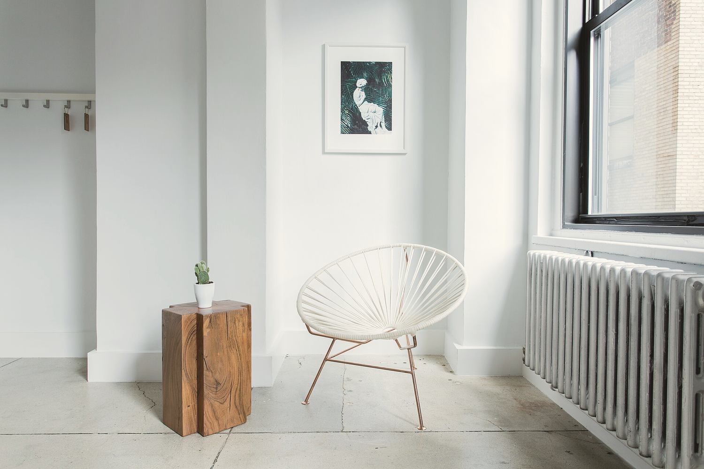

Port Arthur, Turku
Koti Port Arthur
Kolmio 1930-luvun kerrostalossa. Ikkunat ja patterit jäivät paikoilleen, ja huonekalut sijoitettiin niiden mukaan.

Lähtökohta
Asunto on 78 neliön kolmio kolmannessa kerroksessa. Talo valmistui 1934, ja asukkaina on pariskunta ja kaksi lasta.
Ikkunat ovat talon alkuperäisiä, ja taloyhtiö uusii ne vasta 2028. Siksi ikkunoihin, valurautapattereihin ja ulkoseiniin ei saanut koskea. Samassa huoneessa piti mahtua ruokapöytä, lasten leikkipaikka ja toisen vanhemman etätyöpiste.
Ratkaisu
Purimme keittiön ja olohuoneen välisen kevyen väliseinän, jolloin ikkunaseinä jäi yhden huoneen käyttöön. Ruokapöytä siirtyi ikkunan viereen, ja patterin edessä on vain matala penkki. Eteisen ja olohuoneen väliin jäi nurkka, johon mahtui lukutuoli ja pieni pöytä.
Parkettilattia hiottiin ja öljyttiin. Seinät maalattiin kalkkimaalilla, koska se päästää kosteuden läpi ja kestää vanhalla rappauksella paremmin kuin muovimaali. Verhot ommeltiin ohuesta pellavasta ikkunoiden leveyden mukaan.
Suunnittelu kesti kymmenen viikkoa ja remontti kolme kuukautta.
Pinnat
- Kalkkimaali, seinät
- Parketti, hiottu ja öljytty
- Pellava, verhot



Oma kohde
Kerro kohteestasi.
Lähetä osoite, huoneet ja toivottu aikataulu, niin ehdotamme käyntiaikaa kahden arkipäivän kuluessa.
Ota yhteyttä